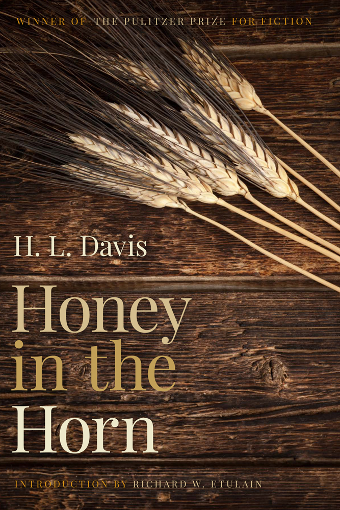
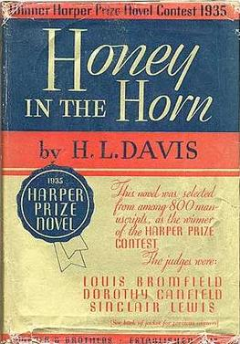

Honey in the Horn follows the journey of Clay Calvert, a young drifter traveling through early twentieth-century Oregon during the homesteading period in the years between 1906 and 1908. Set primarily in rural Oregon, the novel traces Clay’s movement through ranchlands, small towns, and wilderness as he encounters a wide range of characters shaped by hardship, isolation, and survival on the frontier.
Along the way, Clay meets many odd characters in traveling caravans. Sometimes during his journeys, he becomes entangled in their stories, homesteading, failing, and traveling again, and along the way he grapples with his past involving his brother, Wade Shiveley, and the moral dilemmas surrounding loyalty, truth, and guilt. Early on, Clay’s relationships often fail, and he has to grow as a character.
His path crosses with settlers, ranchers, lawmen, and other wanderers, each representing different aspects of life in the Pacific Northwest during this transitional period. The novel blends adventure, romance, and a somewhat episodic form of storytelling to portray Oregon as both harsh and alluring, and a place where survival depends on adaptability and a never-failing resilience to get back up and keep finding a way. Ultimately, Clay’s journey is less about reaching a destination and more about experiencing the diverse human and environmental forces that define Oregon’s landscape and identity.
Honey in the Horn is one of those stories that captivates you with its use of language. You wander forward, and before you realize it, you are immersed, or I suppose, entangled in the heavy rains and thick blackberry thickets Western Oregon is known for. Or suddenly, you find yourself wandering across the shrub-plains of Eastern Oregon. Undeniably, this work is Oregonian, and as you emerge on the other side of those thickets or wake in a caravan on a cold morning, you find yourself hearing the homesteading gossip on the 1900s frontier, embedded into that very life where word travels as fast as people can walk.
As a work of historical fiction written for an adult audience, the novel can be challenging at times. Its plot meanders much like Clay's own journey across Oregon, but this wandering ultimately serves a purpose, culminating in a hard-earned sense of maturity and stability. When writing this book, Davis struggled financially. During his time writing Honey in the Horn, he sold his car, pawned, and later sold his typewriter. “He was even worried about paying postage,” as written by Richard W. Etulain in the introduction of the book’s 2015 edition. Honey in the Horn exploded on the literary scene, much to Davis’ surprise, after it was published in August of 1935. He was awarded the Harper Prize and $7,500 in 1935, and then the Pulitzer Prize in 1936.
I chose this text because of the life Harold L. Davis lived. Though he wrote fictional stories about pioneer life in Oregon and the hardships of survival, he himself was the modern equivalent of a pioneer. During his early childhood, he moved around from place to place as his father found work, and as he grew up, he worked odd jobs and was known for his standoffish nature. Later in life he married, struggled financially, moved again, and finally found success, later buying a ranch in California only to struggle once more and return to work.
In many ways, Davis's life mirrors the world he wrote about. Like Clay Calvert, he experienced uncertainty, hardship, and constant movement in search of opportunity. That personal familiarity with struggle gives the novel an authenticity that makes Oregon feel less like a setting and more like a living force shaping the lives of its people, his included. Through the novel’s portrayal of pioneer communities, rural landscapes, and the resilience required to survive them, Honey in the Horn remains an important work of Oregon literature. It captures a period in the state's history that reminds us Oregon's identity has always been shaped by those willing to endure hardship in pursuit of a better life.
Harold Lenoir Davis was an American novelist and poet. A native Oregonian, he was born in Nonpareil, Douglas County, in the Umpqua River Valley. When he was growing up, his father was frequently looking for work, and his family moved often. Harold L. Davis’ first published works were poems, and in April of 1919 he sent a small collection of poems to Harriet Monroe at Poetry magazine and was promptly awarded the Levinson Prize of 1919. That would be the first of many other works. In 1932, Davis was awarded a Guggenheim Fellowship, which allowed him to focus on and finish Honey in the Horn. During his life, he would write five novels and a large collection of short stories, poems, and essays. As a result of arteriosclerosis, his left leg was amputated, and though he suffered chronic pain, he continued to write. In 1960 he died of a heart attack in San Antonio, Texas.
Don Berry, Trask (2004)
- Follows a mountain man looking for opportunities in new land to settle.
Harold L. Davis, Harp of a Thousand Strings (1947)

